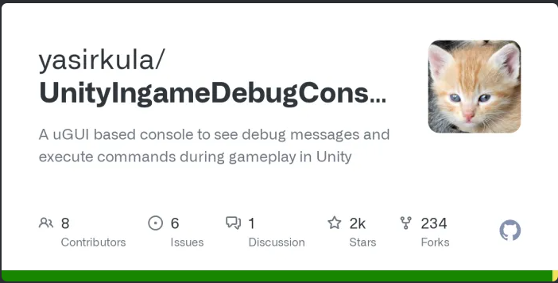

F25 Blog Post #1
Because our Project Dragonheart from the previous semester was being handed over to the production team, we had a meeting before the kickoff with the studio directors to establish what direction the game would be taken in, what was completed, what was left to be completed, and what tasks would exist for each studio department. There were certain aspects which hadn’t been completely established during our R&D phase.
The kickoff meeting mostly consisted of ice-breakers and introductions to the projects. Most of the studio members who were returning already knew of the generaal idea of the project from our presentations and showcases from the previous semester. Those that were new were given a basic description of the project, knowing they’d become more accustomed as the project as the semester goes on.
Once general introductions and ice-breakers were finished people were each assigned their initial tasks for the semester. I was to work on a debug terminal, which would be useful for fellow programmers when debugging and testing their own features. This wasn't something that had been considered previously as it wasn't a priority with a team of only two programmers.
Instead of creating a terminal from scratch, I used a existing package from a Github Repo that was suggested to me by Connor Chen. I believe that same package was used in the previous Studio project.
Once the package was added to the project it was fairly simple to add individual features and commands. I bagan with a way to easily add any amount of individual or all resources. For the dungeon system I added a way to automatically hire either a team of a random party or a preset team with max stats. I also added a way to automatically win or lose a fight, which did take some adjusting to the fighting code to work correctly. Finally, as general utilities, I added a command to place a preset town with one of every building and a command to change the timescale of the game.
One of my fellow programmers who was assigned to environmental game features needed to make use of the pathfinding system that I had created. I got onto a discord call with him to explain the system in more detail, including the general functionality, how to use it, and examples of how this system had already been applied in the project elsewhere.
This meeting began relitively similar to the kickoff meeting. We began with another ice-breakers session of Jackbox games. After that, the people who had completed their previously assigned tasks were given new tasks. I was assgined to complete the contractor. The contractor wasn't extremely fleshed out design-wise so we discussed it a bit. We decided to do away with the quarry idea. Instead, it would just be for upgrading buildings.
Looking at the working UI designs, the upgrade option would be a part of the "hover UI" functionality which is to be implemented. Thinking about how this would need to be implemented with the current upgrade system, it would need individual logic foreach building type, which seems clunky and inconvenient. I wanted to move the upgrade system, as well as other shared functionality between buildings, into interfaces.
There were multiple goals I had for a new upgrade system. I wanted the upgrades of each building to be serialized within the inspector, which was currently not the case. I wanted the bulk of the upgrade logic to be confined within defualt implementation of the interface as to not bloat the Building scripts. I also wanted functions like accessing upgrades and the next upgrade to be easily accesible.
I also wanted to implement interfaces for the buildings which produce resources and those which expand the town range. The use of which can both can be seen within the previous WizardTower.cs script. This change enabled the simplification of many of the building scripts and in the other scripts which reference this functionality.
This meeting was mostly just a worktime. I still had my work on the contractor to complete after working on the building interfaces, so I didn't need to be assigned any new tasks. I did spend some to complete a new section of the programming documentation to represent the changes made to the Buildings, the BuildingManager script, and the new interfaces.